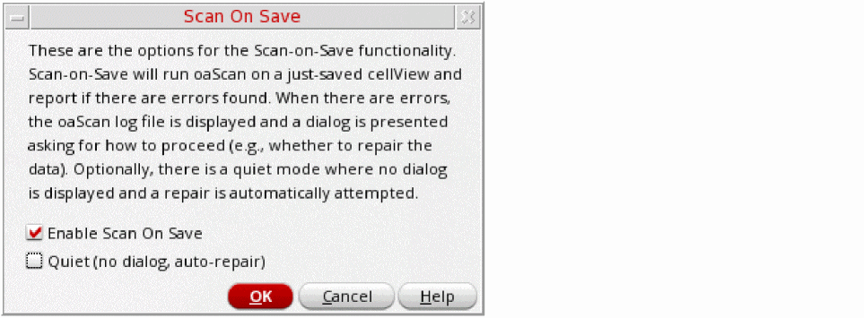

Scanning Cellviews Automatically During Save
Instead of manually calling oaScan after each design update, you can run the check automatically any time you save data to disk. The software first makes a backup copy of the pre-save database and then runs oaScan on the newly-saved data. If a data issue has been introduced in the session since the last save, the backup copy can be restored.
Enabling Scan on Save
-
From the CIW menu bar, choose oaScan – Scan On Save.
The Scan On Save form is displayed. - Check the Enable Scan On Save box to switch on the feature.
-
Click OK to save the settings.
Whenever you save a cellview, Virtuoso automatically makes a backup copy of the cellview and runs oaScan.
Specifying the Location of Scan On Save Log Files
By default, the log files generated by Scan On Save are saved to the /tmp directory.
Cadence recommends that you create a central location in which to store log files and point to it using the CDS_SCANLOG shell environment variable. For example:
setenv CDS_SCANLOG "DIR=/home/user/scanlogs"
This lets you collect all oaScan log files in one place allowing you to easily locate and forward them to Cadence if required.
Handling Scan On Save Results
If the scan reveals an issue in the saved data, Virtuoso pops up a dialog where you can confirm what action to take next.
If the data contained an oaScan issue before the save. The following dialog box appears:
If an oaScan issue was found when the original data was clean. The following dialog box appears::
Repairing Issues Automatically
To suppress the Scan On Save results dialogs and automatically repair any issues found, check the Quiet box in the Scan On Save form. When this setting is enabled, no dialog is popped up and oaScan attempts to automatically repair the cellview, if required.
Related Topics
Return to top